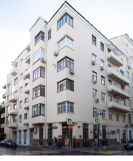
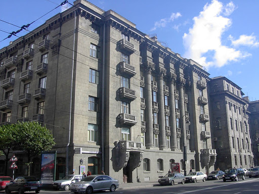
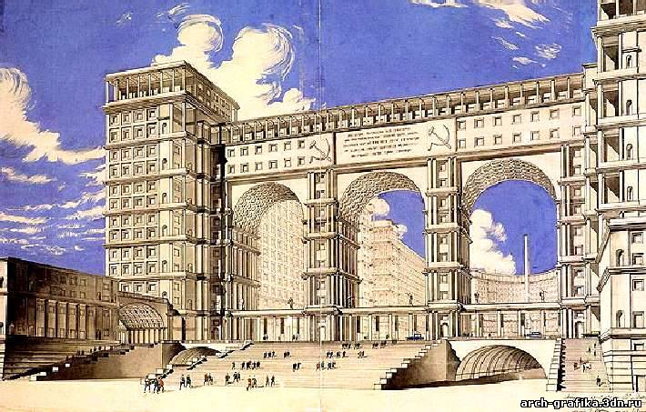
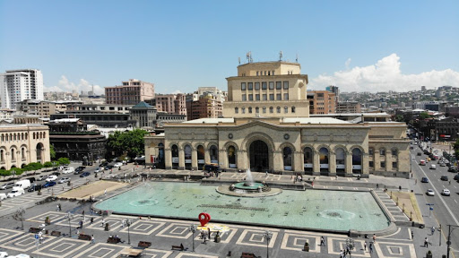
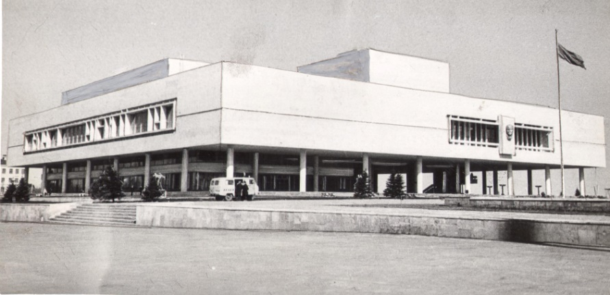
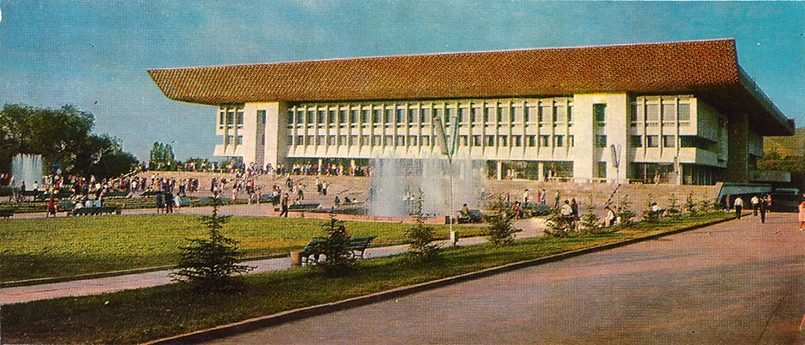

1.
Объекты архитекторов и худ.:
А.
Родченко (конструктивизм)
1.1 А. Родченко. Плакат «Ленгиз:
книги по всем отраслям знания». 1924 год
1.3 А. Родченко. Фотомонтаж
«Кризис». 1923 год
1.4 А. Родченко. Реклама
Добролета. 1923 год
1.5 А. Родченко. Интерьер
«Рабочий клуб» на выставке Париж 1925г.
1.6а А. Родченко. Пространственная
конструкция №16
1.6б А. Родченко. Пространственная
конструкция №10
Я.
Чернихов (конструктивизм, авангард)
1.7 Я. Чернихов. Канатный цех с водонап. башней завода «Красный Гвоздильщик», Ленинград,
(1931 г.)
1.8 Я. Чернихов. Графика
Чернихова
1.9 Я. Чернихов. Абстрактные
архитектурные композиции Чернихова

1.10 Я. Чернихов. Ритм
индустриальных конструкций
И.
Голосов (конструктивизм, постконструктивизм)
1.11 И. Голосов. Дом культуры
имени С. М. Зуева , 1928 конструктивизм
1.12 И. Голосов. Жилой дом
Военно-инженерной академии, постконструктивизм, 1936-1941
1.13 И. Голосов. Дом коллектива ,1930,
конструктивизм

В.
Татлин (русский авангард, родоначальник конструктивизма)
1.14 В. Татлин. «Башня Татлина»,
1920-1921. Конструктивизм
1.15 В. Татлин. Летатлин (орнитоптер) 1929-1932, конструктивизм
И. Леонидов (конструктивизм)
1.16 И. Леонидов. Лестница
санатория им. Серго Орджоникидзе в Кисловодске 1937 г
1.17 И. Леонидов. Конкурсный
проект Дома Наркомтяжпрома на Красной площади в Москве. 1934
1.18 И. Леонидов. Дипломный
проект Институт им. Ленина 1927г.
1.19 И. Леонидов. Проект
международного конкурса Дома Центрсоюза в Москве 1928 г.

1.20 И. Леонидов. Проект
международного конкурса Памятник Колумбу в Санто-Доминго 1929 г
1.21 И. Леонидов. Проект расселения,
Магнитогорск. 1930
К.
Малевич (архитектоны)
1.22 К. Малевич. Архитектон
«Альфа». 1924
1.23 К. Малевич. Архитектон
«Гота» 1923
1.24 К. Малевич. Горизонтальные
архитектоны. Середина 20-х годов
Э. Лисицкий
и Н. Ладовский АСНОВА. Ассоциации новых архитекторов
1.25 Выпуск «Известий АСНОВА -
Серия небоскребов 1923. Проект Лисицкова. Ладовский (ред)
1.26 Эль Лисицкий. Трибуна
Ленина. 1920. Третьяковская галерея
1.27 Эль Лисицкий. «Клином
красным бей белых». Плакат. 1920 г
1.28 Перронный зал станции метро
«Дзержинская» (ныне «Лубянка») (1934—1935, Москва) Н. Ладовский
1.29
Наземный вестибюль ст. метро «Красные Ворота» (1935, Москва, Пл. Красные
Ворота) Н. Ладовский
Братья
Веснины (конструктивизм)
1.30 Братья Веснины. Проект
Дворца труда в Москве. 1923
1.31 Братья Веснины. Проект
здания Московского отделения конторы и редакции газеты «Ленинградская Правда»,
Москва, 1924 г
1.32 Братья Веснины. Дворец
культуры ЗИЛа, Москва 1930-37

1.33 Братья Веснины. ДнепроГЭС
1927 г
1.34 Братья Веснины. Проект
Наркомтяжпром 1934 г
1.35 Братья Веснины. Театр
музыкальных действий в Харькове (проект)
1.36 Братья Веснины. Универмаг на
Красной Пресне в Москве

М.
Гинзбург (конструктивизм)
1.37 М. Гинзбург. Проект жилого
дома Наркомфина в Москве, 1928—1930 годах.
1.38 М. Гинзбург. Дом
правительства Алма-Ата, Казахстан 1929-1931
1.39 М. Гинзбург. Жилой дом
сотрудников Госстраха в Москве 1926.

К.
Мельников (авангард)
1.40 К. Мельников. Дом Мельникова
в Кривоарбатском переулке 1927-1929 гг
1.41 К. Мельников. Бахметьевский гараж 1927 г (соавтор Шухов)
1.42 К. Мельников. Гараж на Новорязанской улице 1926-1929 г
1.43 К. Мельников. Гараж «Интурист»
1932-1934
1.44 К. Мельников. Гараж Госплана
СССР 1934-1936
1.45 К. Мельников. Ново-Сухаревский рынок 1924 г
1.46 К. Мельников. Павильон
Махорка 1923
1.47 К. Мельников. Павильон
Международной выставки Париж 1925
1.48 К. Мельников. Проект
памятника Колумбу в Санто Доминго 1929
Клубы:
1.49 К. Мельников. Фабрики имени
Фрунзе 1927-1929
1.50 К. Мельников. Имени Русакова
1927-1929
1.51 К. Мельников. «Каучук»
1927-1929
1.52 К. Мельников. «Буревестник»
1928-1930
1.53 К. Мельников. Фабрики
«Свобода» до и после реставрации. 1929 г
1.54 К. Мельников. Фарфоровой
фабрики в Дулёво
И. Жолтовский,
А. Щусьев, В. Щуко (неорусский стиль, неоклассицим)
1.55 Казанский вокзал, начало
строительства 1913. Щусьев. Неорусский стиль
1.56 Мавзолей Ленина. Щусьев.

1.57 Гостиница Москва. Щусьев.
1.58 Доходные дома в СПБ 1910 г
по Каменноостровскому проспекту. Щуко. Неоклассика

1.59 Главное здание Российской
гос. библиотеки в Москве 1928-1958, Гефрейх, Щуко. Неоклассика
1.60 1-я Всерос.
сельскохоз. и кустарно-промыш. выставка в Москве.1923г. Иностранный отдел. Щуко.
1.61 Б. М. Иофан, В. А. Щуко, В.
Г. Гельфрейх. Скульптор С. Д. Меркуров. Проект Дворца Советов. 1938. Общий вид
1.62 Здание «особняка Тарасова»
1908—1912 годах на Патриарших прудах Жолтовский. Неоклассика
1.63 Дом на Моховой ул. в Москве
Жолтовский. Неоклассика
Б.
М. Иофан (сталинская архитектура)
1.65 Б. М. Иофан. «Дом на
набережной» (Дом Правительства,) 1928—31
1.66 Б. М. Иофан, В. А. Щуко, В.
Г. Гельфрейх. Скульптор С. Д. Меркуров. Проект Дворца Советов. 1938. Общий вид

И.
Фомин (начав работу в стиле модерн, стал ведущим мастером петербургской
неоклассической школы)
1.67 И. Фомин. Доходный дом
товарищества «Новый Петербург» (Санкт-Петербург, Железноводская
улица / переулок Каховского, 2) 1912
1.68 И. Фомин. Дом общества
«Динамо» (вместе с А. Я. Лангманом) 1929-1931 гг. Конструктивизм
1.69 И. Фомин. Здание
Наркомтяжпрома в Москве. Конкурсный проект. 1935 г

А. Таманян (неоклассицизм)
1.70 А. Таманян. Дом князя С.
Щербатова на Новинском бульваре в Москве (1911—1913). Неоклассицизм
1.71 А. Таманян. Театр оперы и
балета в Ереване (1926—1953), (Большая золотая медаль за проект-макет на межд. выставке
в Париже 1937)
1.72 А. Таманян. Дом
правительства Армянской ССР (1926—1941)
Л.
Руднев (Сталинский стиль)
1.73 Л. Руднев. Административное
здание Наркомата обороны (1934—1938);Ар-деко
1.74 Л. Руднев. Административное
здание на Фрунзенской набережной (1938—1955). Сталинский;
1.75 Л. Руднев. Московский государственный
университет, Главное здание (1949—1953 гг.);
1.76 Л. Руднев. Дом правительства
Азербайджанской Советской Социалистической Республики в Баку (строительство
закончено в 1952 году; соавторы: В. О. Мунц, И. В. Ткаченко);
1.77 Л. Руднев. Военная академия
им. Фрунзе. 1937г.
И.
Лангбард (был сторонником вертикальных архитектурных решений)
1.78 И. Лангбард. Дом Красной
армии в Минске (Дом Офицеров) (1934—1939 гг.);
1.79 И. Лангбард. Гос. театр
оперы и балета Белорусской ССР в Минске (1934; построен 1937—1938 гг.);
1.80 И. Лангбард. Зд-е город. комитета КПУ в Киеве (1939 г., ныне —
Министерство иностр. дел Украины);
1.81 И. Лангбард. Театр имени
Янки Купалы в Минске, реконструкция главного фасада (1938 г.);
1.82 И. Лангбард. Дом Советов в
Могилеве. 1935г
1.83 И. Лангбард. Главный корпус
Академии наук Белорусской ССР в Минске (1935—1939 гг.);
1.84 И. Лангбард. Дом
правительства Белорусской ССР в Минске, заложен в 1929 г.; 1934—1937 гг.);
А.
Воинов (Сталинский неоклассицизм)
1.85 А. Воинов. гостиница
«Свислочь» в г. Минске 1934-1938 гг
1.86 А. Воинов. Здание ЦК КПБ в
Минске 1939-1941гг. (соавтор В.Вараксин). Сталинский
неоклассицизм
1.87 А. Воинов. Здание обкома КПБ
(ныне Исполнительный секретариат СНГ) в г. Минске. 1953-1956 гг. Сталинский
неоклассицизм
Заборский Г.В.
1.88 Заборский
Г.В. Здание Минского суворовского военного училища 1953г.
1.89 Заборский
Г.В. Здание кинотеатра «Пионер», начало 1960-х годов
1.90 Заборский
Г.В. Музей Великой Отечественной войны. Начало 1960-х годов
1.91 Заборский
Г.В. Монумент Победы на пл. Победы. Минск. (соавторство с В. Король)
1.92 Заборский
Г.В. Деревня Мышковичи, колхоз «Рассвет»

2.
АСНОВА, ОСА, АРУ, ИНХУК, УНОВИС, ВХУТЕМАС (знать расшифровку объединения и
направление творчества)
АСНОВА
(Ассоциация новых архитекторов) — первая творческая организация в советской архитектуре,
ставшая оплотом архитекторов-рационалистов. Учредителями АСНОВА стали архитекторы
Н. А. Ладовский, Н. В. Докучаев, В. Ф. Кринский, А.
М. Рухлядев, Л. М. Лисицкий, А. В. Бунин, А. Ефимов,
В. И. Фидман, С. Мочалов и В. С. Балихин; художники
А. М. Родченко, Б. Д. Королёв, инженер А. Ф. Лолейт.
АСНОВА
выдвинула идею синтеза архитектуры и других видов искусства, создающего новый
вид искусства. Члены организации ставили перед собой задачу «рационального
обоснования качеств» архитектуры.
Объединение
современных архитекторов (ОСА) — общественная организация, основанная в 1925 году членами
ЛЕФа. Выступало под лозунгами конструктивизма и функционализма.
Пропагандировало использование новейших конструкций и материалов, типизацию и
индустриализацию строительства.
АРУ
(Объединение архитекторов - урбани́стов) — общественная организация
советских архитекторов, основанная в 1928 году Н. А. Ладовским
и группой его последователей, вышедших из состава АСНОВА. К числу наиболее
крупных работ АРУ в 1929—1930 годах относятся проекты рабочего посёлка на 50
тыс. человек для планируемого к строительству автомобильного завода под Нижним
Новгородом, посёлка при Тельбесском металлургическом
заводе, театра ВЦСПС, планировка Чарджуя, Котласа,
Магнитогорска, территории Сельскохозяйственной академии в Москве, конкурсный
проект Дворца Советов, Дома государственной промышленности и ряд других.
Институт
художественной культуры (ИНХУК), также известен как Государственный институт художественной
культуры, (ГИНХУК, Гинхук) — научно-исследовательская
организация и творческое объединение в Петрограде — Ленинграде, занимавшееся
вопросами теории и истории художественной культуры. Создан в 1923 году на базе
Музея художественной культуры и просуществовал до 1926 года.
В
Институте художественной культуры в разное время работали К. С. Малевич, В. Е.
Татлин, М. В. Матюшин, Н. Н. Пунин, И. Г. Чашник, Л. М. Хидекель
и другие видные деятели русского искусства первой половины XX века. Новаторские
изыскания Института художественной культуры оказали заметное влияние на
развитие изобразительного и прикладного искусства XX века.
УНОВИС
(«Утвердители нового искусства») — авангардное художественное
объединение, созданное К. С. Малевичем в Витебске (Беларусь). Объединение
представляло собой ранний пример арт-группировки нового типа, созданной — что
характерно для советского постреволюционного десятилетия — на базе госучреждения.
ВХУТЕМАС
(Высшие художественно-технические мастерские) — учебные заведения, созданные в
Москве, Петрограде и других российских городах с 1918 года. Московский ВХУТЕМАС
образован в 1920 году путём объединения Первых и Вторых Государственных
свободных художественных мастерских (созданных ранее на основе Строгановского
художественно-промышленного училища и Московского училища живописи, ваяния и
зодчества). В 1918—1919 годах в Москве, Петрограде, Витебске, Воронеже, Казани,
Екатеринбурге, Самаре, Саратове, Ярославле было создано 9 мастерских, в
дальнейшем их количество увеличивалось. Они имели художественно-промышленную
направленность, противопоставляемую «старорежимному академическому искусству».
3.Система
каналов СССР (Беломор-Балтийский, Москва-Волга, Волго-Дон).
3.1 Беломор-Балтийский канал.
Построен 1931-1933гг.
3.2
а
Канал Москва – Волга, 1937г
б Канал им. Москва
3.3. Волго-Донский
канал, 1952 г.
4.Дома
коммуны (стиль, арх.):
4.1 Дом Наркомфина, построен по
проекту архитекторов Моисея Гинзбурга, Игнатия Милиниса
и инженера Сергея Прохорова, 1928—1930 годах. Конструктивизм
4.2 Дом политкаторжан. Построен
в 1931—1933 годах по проекту архитекторов Г. А. Симонова, П. В. Абросимова и А.
Ф. Хрякова. Конструктивизм
4.3 Дом коммуны в Гомеле.
Построено в 1929—1931 годах по проекту архитектора Станислава Даниловича Шабуневского
5.Участие
в Выставках:
5.1 Павильон СССР в Париже
1925г. Архитектор-модернист К. С. Мельников.
5.2 Павильон СССР в Париже
1937г. Архитектор: Б. Иофан.
5.3 Павильон СССР в Нью - Йорк
1939г. Скульптор С. Д. Меркуровым.
5.4 Павильон СССР в Брюссель
1958г. Архитектор А.Т. Полянский.
5.5 Павильон СССР в Монреаль
1967г. Архитекторы М. В. Посохин, А. А. Мндоянц и Б.
И. Тхор

5.6 Павильон СССР в Осака 1970г.
Архитекторы: М. Посохина и В. А. Свирского.
5.7 Павильон СССР ЭКСПО-75.
(Япония)
5.8 Павильон СССР ЭКСПО-86
Ванкувер (Канада)
5.9 Павильон СССР, ЭКСПО-88
Брисбен (Австралия)

5.10 ВСХВ – 1923. Всероссийская
сельскохозяйственная и кустарно-промышленная выставка — выставка в Москве,
проходившая в 1923 году. Была первой выставкой такого масштаба, проведённой на
территории СССР (России). Предшественница ВСХВ—ВДНХ.
5.10.1 Павильон «Махорка» на ВСХВ
(архитектор К. С. Мельников, художник И. А. Француз).
5.10.2 Входная Триумфальная арка в
ВДНХ (архитектор И. В. Жолтовский, при участии В. Д. Кокорина, художник И. И. Нивинский)
5.11 ВДНХ СССР (осн. павильоны, генплан, фонтаны)
Фонтаны:
5.11.1 14 фонтанов центральной
аллеи. Архитекторы Г. В. Щуко, В. М. Куранов. 1951—1954
гг.
5.11.2 «Дружба народов».
Архитекторы К. Т. Топуридзе, Г. Д. Константиновский,
инженер-конструктор В. И. Калявин, скульпторы З. В. Баженова, А. И. Тенета, И.
М. Чайков, З. В. Рылеева и В. П. Гаврилов. 1951—1954 гг.
5.11.3 «Каменный цветок».
Архитектор К. Т. Топуридзе, скульпторы П. И.
Добрынин, З. В. Рылеева, В. В. Александрова-Рославлева. 1950—1954
5.11.4 «Золотой колос». Архитектор
К. Т. Топуридзе, скульптор П. И. Добрынин.
1950—1954гг.
5.11.5 Генеральный план Выставки
достижений народного хозяйства СССР. 1959 г. Главный архитектор: А.Ф. Жуков
Основные
павильоны:
5.11.6 Центральный. Архитектор Ю.
В. Щуко, инженер В. Е. Каплан при участии архитекторов Е. А. Столярова
(фасады), С. И. Никулина, Р. А. Бегунца, П. Х.
Платонова, Р. А. Никитина (интерьеры). 1951—1954
5.11.7 «Народное образование».
Архитектор С. Н. Полупанов. Скульптор А. И. Тенета. Главный художник павильона
Д. П. Шухвостов. 1951—1954
5.11.8 «Юные натуралисты».
Архитекторы Н. П. Гришин, Г. С. Витухин, А. С. Гольдин,
Л. К. Игнатова, В. Г. Макаревич, А. Т. Полянский. 1952—1954
5.11.9 «Республика Беларусь».
Архитекторы Г. А. Захаров и 3. С. Чернышёва, главный
художник павильона А. Н. Гавриленко. Фрески во дворике «Народ Белоруссии
построил социализм» — художников Б. Ф. Уитц и О. Т.
Павленко с бригадой. 1952—1954
5.11.10 «Транспорт». Архитектор С.
Н. Полупанов, П. П. Ревякин, А. И. Игнатьева, А. М. Громов, В. П. Туканов.
Главный художник Г. Г. Савинов, скульптор Л. Писаревский. 1937—1954.
5.11.11 «Земледелие». Архитекторы А.
А. Таций, Н. Иващенко. 1952—1954.
6.ДнепроГЭС - крупная
гидроэлектростанция на юге Украины, пятая ступень каскада гидроэлектростанций,
обеспечивает электроэнергией Донецко-Криворожский
промышленный район. Станция является старейшей среди каскада электростанций на
реке Днепр. На основе Днепрогэс в Запорожье был создан металлургический,
химический и машиностроительный промышленный комплекс. С сооружением плотины,
которая на 50 м повысила уровень воды в Днепре, открылось сквозное судоходство.
Главным
инженером (а вскоре и начальником Днепростроя) был
назначен Александр Винтер, его заместителями были Борис Веденеев и Павел Роттерт.
7.Дворец
Советов в Москве (конкурсные проекты ведущих архитекторов).
Огромное
значение в архитектурной жизни СССР имело проектирование Дворца Советов СССР,
начатое в 1931 г. Было проведено четыре этапа конкурса.
7.1 Конкурсный проект Дворца
Советов в Москве: эскизный проект 1933-1935 гг. В. Гельфрейх, Б. Иофан, В.
Щуко, скульптор С. Меркулов. Макет (общ. высота 415 м со скульптурой В. И.
Ленина 80 м)

7.2 Конкурс. проект Дворца
Советов в Москве: макет Б. Иофана, 1933 г. - основа для дальнейшей разработки
7.3 Конкурс. проект Дворца
Советов в Москве: технич. проект Дворца Советов, И.
Жолтовский, 1931 г
7.4 и др. проекты
8.Дом
на Набережной в Москве. Арх. Б.М. Иофан. Строительство: 1927-1931 гг.
Конструктивизм
9.Семь
высоток Москвы (название и архитекторы).
9.1 Главное здание МГУ на
Воробьёвых горах. Выстроено в 1949–1953 годах (архитекторы Л. В. Руднев, С. Е. Чернышёв, П. В. Абросимов, А. Ф. Хряков, В. Н. Насонов)
9.2 Гостиница «Украина».
Построена в 1953–1957 годах (архитектор А. Г. Мордвинов при участии В. К. Олтаржевского, В. Г. Калиша, инженера П. А. Красильникова)
9.3 Жилой дом на Котельнической
набережной. строился в 1948–1952 годах (архитекторы Д. Н. Чечулин, А. К. Ростковский, инженер Л. М. Гохман)
9.4 Здание Министерства
иностранных дел. построена в 1948–1953 годах
(архитекторы профессор В. Г. Гельфрейх, М. А. Минкус)
9.5 Жилой дом на Кудринской
площади. построен в 1948–1954 годах по проекту
архитекторов М. В. Посохина, А. А. Мндоянца и
конструктора М. Н. Вохомского.
9.6 Административно-жилое здание
возле «Красных Ворот». Было построено с 1947 по 1952 годы. Архитекторы: А. Н.
Душкин, Б. С. Мезенцев.
9.7 Гостиница «Ленинградская».
Арх.: Л. М. Поляков, А. Б. Борецкий. Инженер Е. В. Мятлюк.
1949–54 гг.
10.Генеральный
план Москвы 1935 г. (осн. идеи развития по плану)
Первый
комплексный план реконструкции Москвы, в котором исторически сложившаяся
радиально-кольцевая структура города сочеталась с освоением новых районов,
созданием кольцевых и радиальных магистралей. Архитекторы: Владимир Семёнов и
Сергей Чернышёв. Утверждён 10 июля 1935 года.
Послужил основой для сталинской реконструкции Москвы. Реализован частично.

План
предусматривал строительство новых широких транспортных магистралей и
расширение имеющихся. Существующие мосты предполагалось обновить и расширить,
дополнив новыми (в их числе Крымский мост). Приоритетным направлением
признавалось строительство Московского метрополитена.
Большое
значение придавалось также озеленению города, созданию новых парков и реконструкции
существующих. Планировалось создание пяти «зелёных» колец вокруг центра города.
Для отдыха социалистических трудящихся были организованы рекреационно-парковые
пространства нового типа — парк Горького и ВДНХ.
Обводнение
Москвы развивалось по всему городу. С севера столицу должны были огибать два
кольцевых канала. Один из них, малый, соединял Яузу с Химкинским
водохранилищем, а второй выходил в район Южного порта. Излучины Москвы-реки для
удобства судоходства предполагалось спрямить. Наибольшее внимание уделялось
строительству каналов, которые должны были соединить Москву со всеми крупными
реками европейской части страны. Новые высокие незатопляемые набережные общей
протяженностью 52 км, облицованные гранитом, были закончены к 1937 году.
11.
Строительство общественных правительственных центров (ансамблей)
11.1 Площадь Республики (Ереван).
Архитектор А.Таманян. 1924 году. Строительство
большей части сооружений было завершено к 1950 году, последнее здание —
Национальная галерея было достроено в 1977 году.

11.2 Площадь Свободы (Баку). С
1936 года по 1952 год шло строительство главного ныне здания площади — Дома
правительства. Архитекторы Лев Руднев и Владимир Мунц.
11.3 Площадь Дзержинского
(Харьков).
11.3
1 Госпром. Построен в 1925—1928 годах. Конструктивизм.
Архитектор: С.С. Серафимов
11.3
2 Дом
проектных организаций. Построен в 1930—1932 годах. Архитектор: С.С. Серафимов

11.33 Дом кооперации. Построен в
1929-1954 гг. Архитекторы: А.И. Дмитриев, О.Р. Мунц. Конструктивизм. Сталинский
ампир
11.4 В Алма-Ате в квадрате
четырех улиц был создан крупный общественный центр, в который входили:
11.41 Дом правительства. Построено
в 1927—1931 гг. Конструктивизм. Архитекторы М. Гинзбург, Ф. Милинис
и инженер В. Орловский
11.42 Здание Управления
Туркестано-Сибирской железной дороги. Конструктивизм. Архитекторы: Гинзбург
Моисей Яковлевич, Милинис Игнатий Францевич.
Инженеры: Сергей Прохоров. 1928 г
11.43 Дом связи. Конструктивизм.
(арх. Г.Г. Герасимов, 1931-1934 гг.)
11.6 Зд-е
правительства Российской федерации арх.Чечулин
1965-79гг.
11.7 Киев. Дом СНК (Совета
Народных Комиссаров) арх Фомин, Абросимов 1934-1938 гг
11.8 Дом правительства Грузинской
ССР. Строительство: 1933-1953гг. Архитекторы: В. Кокорин, Г.Лежава,
В. Насаридзе
11.9 Дом Правительства БССР (Лангбард)
12
12.1 Мавзолей. Строительство
1924-1930 гг. Архитектор: А.Щусев. Египтизирующий стиль
12.2 Комплекс в Горках. Усадебный
комплекс был реконструирован под руководством Ф. О. Шехтеля. В 1913—15 гг. по
проекту архитектора Ф. Н. Кольбе строятся
хозяйственный двор, водонапорная башня, конюшни и парковые беседки.
12.3 Ленинский мемориал в
Ульяновске. (архитекторы Б. Мезенцев, М. Константинов и Г. Исакович)

12.4 Дворец им. Ленина в
Алма-Ате. Архитекторы: Владимир Ким, Юрий Ратушный, Владимир Алле, Николай Рипинский, Лев Ухоботов и другие.
Год постройки: 1970. Модернизм

12.5 Музей В.И.Ленина
в Ташкенте. Возведенное в 1970 г. Архитекторы Е. Г. Розанов, В. Н. Шестопалов,
Ю. А. Болдычев.

13
13.«Золотое
кольцо» России традиционно включают восемь основных городов — Сергиев Посад,
Переславль-Залесский, Ростов, Ярославль, Кострома, Иваново, Суздаль, Владимир

14.Мемориалы:
14.1 Брестская
крепость-герой. Мемориал по проектам
скульптора А. П. Кибальникова. 1971 г.
14.2 Саласпилс. Строительство:
1961—1967 годы. Архитекторы: Г. К. Асарис, О. Остенбергс, И. Страутманис, О. Закаменный, А. Паперно, Г. Минц, М. Гундарс.
Скульпторы: Л. Буковский, О. Скарайнис, Я. Зариньш, Э. Неизвестный.
14.3 Хатынь. 1969 г. Архитекторы:
Ю. Градов, В. Занкович, Л. Левин, скульптор народный
художник БССР С. Селиханов.
14.4 Ленино. 1968 год. Здание музея создано по проекту архитекторов
Якова Белопольского, Владимира Хавина, скульптор Владимир Цигаль, конструктор
А. Судаков, художники диорамы в музее Н. Овечкин, А. Интезаров.
14.5 Пискаревское мемориальное
кладбище. Строительство 1956-1960 гг. архитекторы А. В. Васильев и Е. А.
Левинсон
14.6 Мемориал в Ереване в 50-ю
годовщину геноцида армян (Цицернакабе́рд). Основан в
1967 г. Архитектор: А.А. Тарханян.
15
15.1 Дворец пионеров в Москве.
Модернизм. Архитекторы: В. Егерев, В. Кубасов, Ф. Новиков, И. Покровский, Б.Палуй, М.Хажакян.
Строительство: 1958-1962 гг.
15.2 Дворец пионеров в Киеве.
Сооружен в 1962—1965 годах. архитекторы А. М. Милецкий,
Э. А. Бильский
15.3 Артек. С 1960 года началась
реализация проекта архитектора Анатолия Полянского «Большой Артек»
15.4 Москов.
гос. Академ. детский музык. театр им. Н.И.Сац. 1979 г.
Арх. А. Великанов и В. Красильников.
16.БССР.
16.1 Дворец спорта. Построен в
1963-1966 гг. Архитекторы: С.Д. Филимонов и В.Н. Малышев, главный инженер
проекта В. В. Коржевский.
16.2 Крытый рынок «Комаровский».
Сооружение было спроектировано авторским коллективом архитекторов: В. Аладов, А. Желдаков, В. Кривошеев, М. Ткачук на основе
проекта Челябинского Торгового центра.
1979 г.
16.3 Автовокзал « Московский». Строительство: 1990-1999гг. Архитекторы: Н.
Наумов, Ю. Рушев и Л. Волчецкий.
Постмодернизм.

16.4 Здание пригородного вокзала
Минск (сейчас международные кассы). Строительство: 1955-1956 гг. Архитекторы —
Сергей Ботковский и Натан Шпигельман.
Сталинский ампир
16.5 Водноспортивный комбинат.
Архитектор: О.Б. Ладыгина.
16.6 Дворец Республики в
Минске. Строительство: 1985-1997 гг.
Архитекторы: Михаил Пирогов, Леонтий Ульянович Зданевич и Шабалин, Анатолий Андреевич
17.
Государственная библиотека СССР имени В.И.Ленина в
Москве. Архитекторы: Василий Иванович Баженов, Владимир Алексеевич Щуко Начало
строительства 1784 г
18
18.1 Государственная библиотека в
Ашхабаде. Советский модернизм. архитекторы А. Р. Ахмедов, Б. А. Шпак, В. А.
Алексеев. 1969—1974
18.2 Внутренний двор
Государственной Библиотеки в Ашхабаде.
19.
Спортивные стадионы
19.1 Фото до реконструкции.
«Динамо» в Москве на 80 тыс. зрителей. 1928 г. архитекторы Аркадий Лангман и Лазарь Чериковер.
19.2 «Динамо» в Киеве 1933 г.
Арх. Осьмак, Василий Александрович
19.3 «Динамо» в Тбилиси. 1936 г.
Арх. А. Курдиани
19.4 «Динамо» в Ленинграде (СПБ).
1929г. Арх.: Олег Леонидович Лялин, В.А. Гайкович
20.
Дворец дружбы народов в Ташкенте арх. Е. Г. Розанов 1980 г
21.
Музей этнографии Армении в Октямберяне. Арх. Рафаэль Исраелян 1968 г
22. Мосты:
22.1 Мост Московский ч/з Днепр в
Киеве. гл. инженер Фукс. 1976 г
22.2 Вантовый мост через Даугаву
в Риге. 1981 г. главные инженеры проекта Г. Б. Фукс и М. М. Корнеев, главный
архитектор Гаврилов А. Е.
22.3 Вантовый мост через река
Шексна в городе Череповец (Октябрьский мост) 1970 г.
23.
Телебашни:
23.
1 телебашня
Шухова. 1919—1922. Арх Шухов
23.2 Останкинская телебашня
1960-1967 архитекторы Л. И. Баталов, Д. И. Бурдин, М.
А. Шкуд, Л. Н. Щипакин,
инженеры Н. В. Никитин, Б. А. Злобин
23.3 Таллинская телебашня 1980 г.
Гл. инженер Евгений Игнатов, гл. конструктов Обыдов,
арх. Юрий Синис и Давид Басиладзе
23.4 Рижская телебашня 1976-1986
гг. арх. Асарис
23.5 Киевская телебашня 1968-1973
гг. арх. Виталий Шимановский
23.6 Ташкентская телебашня
1979-1985 гг. арх. Ю.П. Семашко и Н. Г. Терзиев-Царухов
24.
Музей космонавтики в Калуге 1961г. Архитекторы — Б. Г. Бархин,
Е. И. Киреев, Н. Г. Орлова, В. А. Строгий, К. Д. Фомин
25.
Международные аэропорты :
25.1 Шереметьево 1964 – с
посадочным павильоном –«Рюмка». Архитекторы Г.А. Елькин,
Г.В. Крюков, М. Чесаков, М.Б. Гуревич, Л. Иванов
25.2 Шереметьево-2 – 1980.
25.3 Национальный аэропорт
«Минск». 1983г
25.4 Международный аэропорт Звартно́ц в Ереване. 1961.
Конструктор С. Багдасарян. Архитекторы А. Тарханян,
С. Хачикян, Ж. Шехлян, Л. Черкезян
26
26.1 Водолечебница в Друскининкае
1982 г. Арх. Р. Шилинскас, А. Шилинскене
26.2 Санаторий «Дружба» в Ялте.
Архитекторы Игорь Василевский, Ю. Стефанчук, В. Дивнов, Л. Кеслер. Строительство:
1980–1985
26.3 Санаторий «Металлург» в
Сочи. Архитекторы Я.О. Свирский, Г.Л. Битов, О.А. Угрюмова. Строительство:
1950-1956 гг.
27.
Сооружения “Олимпиады – 80” (Москва, Таллин)
Москва:
27.1 Спортивный комплекс
«Олимпийский» 1980г. Арх. М. В.
Посохиным, Б. И. Тхором и Л. С. Аранаускасом
и др (ныне не существует)
27.
2 Крытый
велотрек в Крылатском 1979 г. Арх. Н. И.
Воронина,А.
Г. Оспенников
27.
3 Дворец
Спорта «Динамо» на улице Лавочкина, 1980г архитекторы И. Михалев, Е. Г.
Розанов, Е. К. Чивиков, В. В. Милашевский,
И. Михалев
27.
4 Гостиница
«Космос» 1976-1979 гг. арх В. Андреев, Т.
Заикин, В. Стейскал («Моспроект-1», СССР), О. Какуб, П. Жуглё, С. Эпстейн («Сёфр», Франция)
27.
5
Гостиничный комплекс «Измайлово» 1974-1980 гг. арх Бурдин, Рабаев
27.
6 Новый
корпус телецентра Останкино — ОТРК (Олимпийский телерадиокомплекс) 1964-1967
гг. арх. Л. И. Баталов, В. В. Жаров,, А. А. Закарьян,
Л. С. Соловьёв, К. С. Шехоян
Таллин:
27.7 Олимпийского центра
парусного спорта 1976-1980 гг. арх Хенно Сепманн, Пеэп Янес, Химм
Лоовеэр, Антс Райд, Лео Леэсаар, Велло Аси, Юта Лембер, Ауло Падар, Вяйно
Тамм, Мати Кривель
27.8 Таллинская телебашня см.
пункт 23.3
Доп ВДНХ:
28
“Киргизия” Архитекторы Х. А. Арман, А. Х. Вольберг,
П. Тарвас. Главный художник П. Э. Аавик
1952-1954 гг
29
“Металлургия” Казахская ССР Архитекторы И. М. Петров, И. В. Куприянов, Т. К. Басенов при участии М. П. Александровской. 1940-1954
30
“Космос/Машиностроение” Архитекторы В. С. Андреев, И. Г. Таранов, Н. А. Быкова.
Главный конструктор М. М. Лимановский; конструктор
купола Г. Б. Гордон. Скульпторы С. М. Орлов, А. П. Антропов, С. Л. Рабинович,
И. Л. Слоним, Н. Л. Штамм, П. И. Добрынин, Н. В. Томский с бригадой в составе
М. Ф. Бабурин, Д. П. Шварц, В. Е. Цигаль, Л. Е. Кербель
1938-1939гг
31
“Табак” Архитектор В. С. Кондратьев 1954г
32
“Мясная промышленность” Архитекторы В. М. Лисицын и С. Г. Чернобой,
скульптор Н. А. Конгисер 1951-1954гг
33
“Культура” Узбекская ССР Архитектор С. Н. Полупанов 1952-1954 гг
34
“Атомная энергия” РСФСР Архитекторы Р. А. Бегунц, С.
И. Никулин[8], инженер-конструктор В. Е. Каплан,
скульпторы П. И. Бондаренко, П. В. Кениг, художники Б. Ф. Уитц,
О. Т. Павленко, Г. И. Опрышко, Н. Л. Бабасюк
1952-1954 гг
35
“Здравоохранение” Армянская ССР Архитекторы К. С. Алабян,
С. А. Сафарян 1939-1955

36
“Карелия” Советская печать Архитектор Ф. И. Рехмуков при
участии А. Я. Резниченко 1952-1954